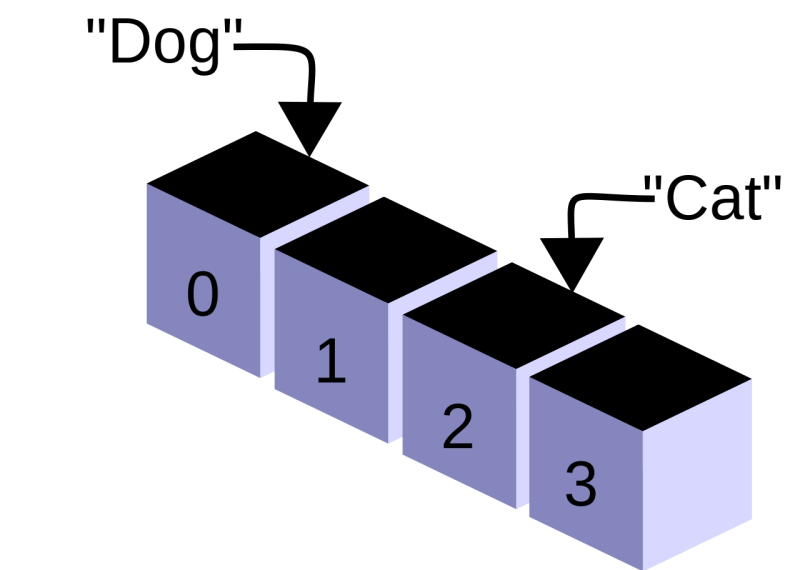
Arreglos (Arrays)
Colección contigua de elementos indexados. Ideal para lecturas ultra rápidas por posición en tiempo constante O(1).
Fundamentos de memoria contigua vs. dinámica, direccionamiento por punteros y pila recursiva.

Colección contigua de elementos indexados. Ideal para lecturas ultra rápidas por posición en tiempo constante O(1).
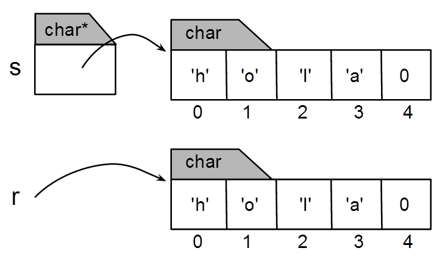
Secuencias ordenadas de caracteres usadas para procesamiento textual y algoritmos de coincidencia de patrones en O(n).
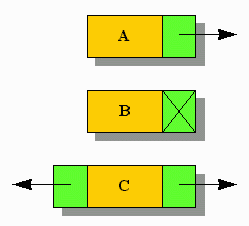
Nodos dispersos enlazados por punteros en memoria dinámica con inserción y eliminación veloz en extremos en O(1).
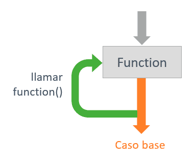
Paradigma de descomposición en subproblemas que utiliza la pila de llamadas del sistema (Call Stack) hasta alcanzar el caso base.
Estructuras con restricción de acceso (LIFO/FIFO), ordenamiento eficiente y búsqueda binaria.

Estructuras lineales con reglas estrictas de acceso (LIFO y FIFO) con inserción y extracción garantizada en O(1).
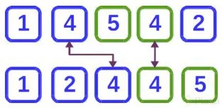
Técnicas avanzadas como QuickSort y MergeSort para clasificar grandes volúmenes con máxima eficiencia asintótica en O(n log n).
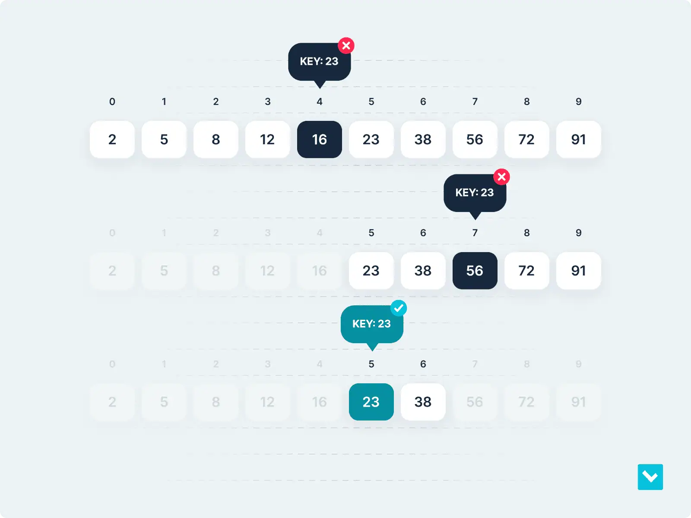
Algoritmo de división sucesiva a la mitad sobre arreglos ordenados, reduciendo exponencialmente las comparaciones a O(log n).
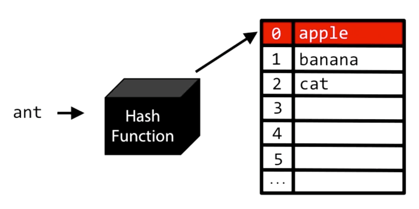
Asociación de pares clave-valor indexados mediante funciones hash con lecturas y escrituras casi instantáneas en O(1).
Modelado de redes complejas, árboles jerárquicos y optimización con subestructuras óptimas.
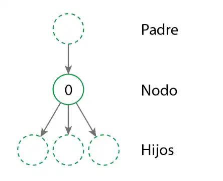
Estructuras jerárquicas con regla de orden: subárbol izquierdo menor a la raíz y derecho mayor, acelerando búsquedas en O(log n).
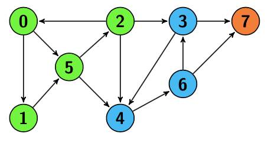
Modelado de redes compuestas por vértices y aristas con peso para calcular rutas óptimas y caminos mínimos en O(E log V).
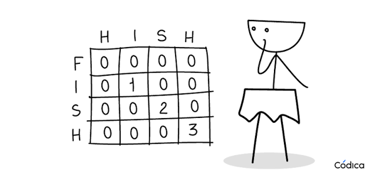
Estrategia de optimización matemática que resuelve problemas subdividiéndolos y almacenando resultados con memoización y tabulación.
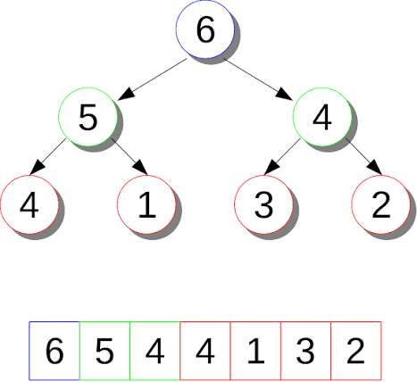
Árboles binarios casi completos especializados para colas de prioridad con recuperación instantánea del elemento prioritario en O(1).